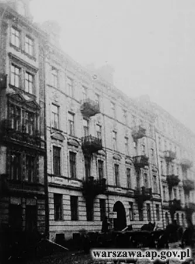
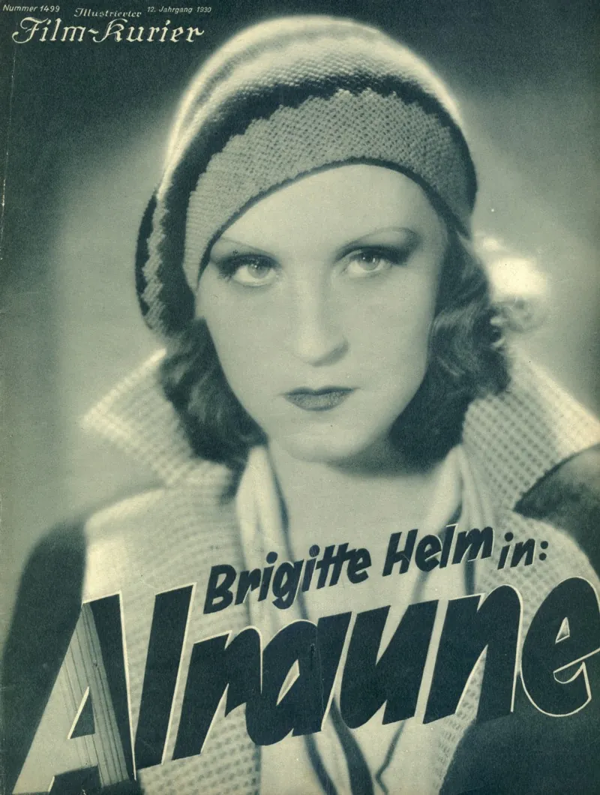
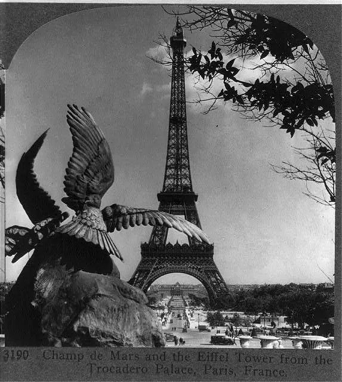
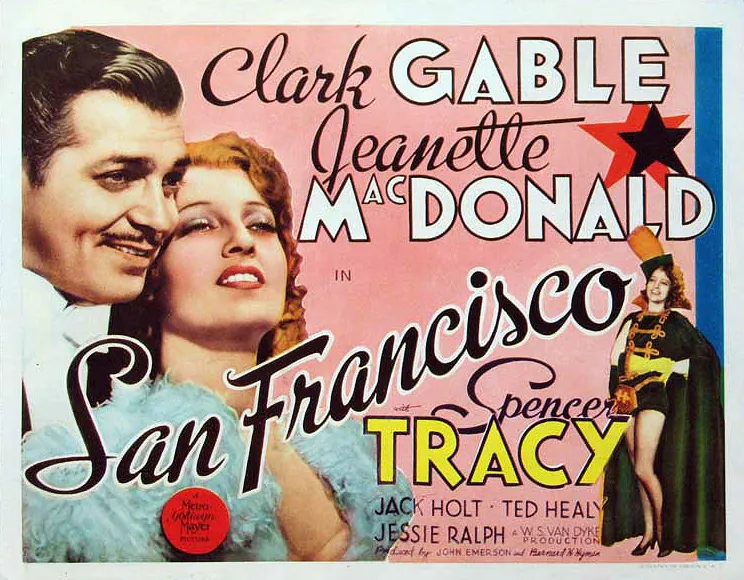
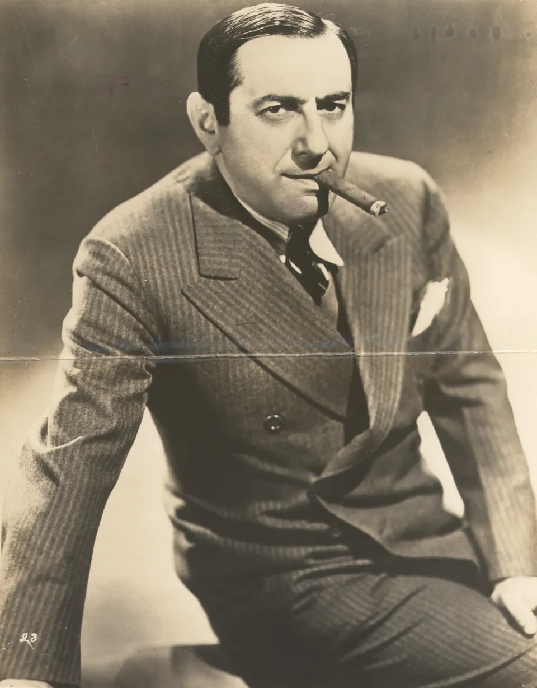

Milestone
Birth
23 January / 5 February 1902
Warsaw
Born in Warsaw to Szmul Moszek Kaper and Maria Mucha, in a Jewish family registered in the city’s non-Christian civil records.
Open event record
Documented chronology
55 published events reconstruct education, early composition, professional networks, European film work and Kaper’s arrival in the United States.
Formation · law studies · first compositions and songs
23 January / 5 February 1902
Warsaw
Born in Warsaw to Szmul Moszek Kaper and Maria Mucha, in a Jewish family registered in the city’s non-Christian civil records.
Open event record
Warsaw
After the one-semester delay documented separately, Kaper was formally entered in the Faculty of Law album at the University of Warsaw.
Open event record
Warsaw
Kaper performs Chopin in a public concert as a pupil of Józef Śmidowicz’s piano class.
Open event record
Berlin and Paris · recordings · cinema · the route to MGM
Warsaw; Berlin
Kaper leaves Warsaw for Berlin to continue his musical education and professional development.
Open event record
Berlin
Kaper records jazz-influenced piano-duo arrangements with Hermann Biek, credited on the recordings as Hermann Bick, for Polydor.
Open event record
Berlin
Alraune marks Kaper’s first clearly documented entry into early sound film, through songs rather than background scoring in the later Hollywood sense.
Open event record
Berlin
Fritz Rotter pairs Kaper with Walter Jurmann in 1931, at the start of the partnership that shapes his European film career.
Open event record
Berlin; Paris
After Nazi persecution intensifies, Kaper and Jurmann leave Berlin and relocate toward Paris.
Open event record
Paris
The European success of Ninon reportedly brought Kaper and Jurmann to the attention of Louis B. Mayer, leading to a meeting at the Hôtel Ritz and an MGM contract.
Open event record
New York; Los Angeles destination
Kaper arrives in New York from France with Eleonora, holding a temporary visa and travelling onward to Los Angeles.
Open event record
20 November – 8 December 1934
Hollywood/Los Angeles
American studio publicity recast Kaper and Jurmann as a Viennese composing team, turning “Vienna” into a promotional brand rather than a biographical fact.
Open event record
MGM · American film and song · continuing European networks
Hollywood/Los Angeles
Kaper makes his Hollywood debut at MGM, contributing to Escapade and other major studio projects.
Open event record
Hollywood/Los Angeles
The title song from San Francisco becomes a major hit, while Kaper and Jurmann also contribute to Universal’s Three Smart Girls.
Open event record
Hollywood/Los Angeles
Kaper participates in the European Film Fund, helping support refugees from the European film community.
Open event record
Hollywood/Los Angeles
Kaper remains at MGM and begins a new solo chapter as a film composer.
Open event record